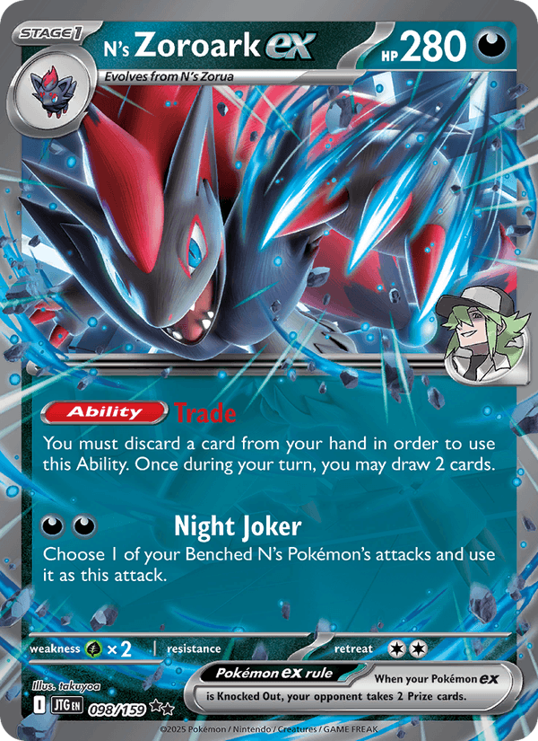

N's Zoroark ex
A fox that never attacks what you see — only what it already moved before you noticed. The illusion isn't in the cards; it's in the sequencing. This guide is for testing it on TCG Live before building it in paper.

Standard legality
2026 rotation confirmed: only regulation marks H, I, and J are legal in Standard right now (digital since March 26, 2026; paper since April 10, 2026). Every card in this list falls inside that window — nothing here rotates out before you finish building it.
Why this deck
This isn't a dedicated Dragapult ex counter dressed up as a full deck — independently, it's one of the best-performing decks in the entire current meta (Top 10 at both Worlds 2026 and NAIC 2026), and it happens to also be one of Dragapult's worst matchups.
Zoroark ex's own Ability Trade — "You must discard a card from your hand in order to use this Ability. Once during your turn, you may draw 2 cards" — matches or beats Dragapult's own consistency tools, so it doesn't lose the way slower decks do. And its second attack, Night Joker, borrows an attack straight off one of your Benched N's Pokémon — the card's own trickster identity, printed right on it.
The kill switch is a separate combo: Binding Mochi + Pecharunt ex's poison + Black Belt's Training/Transformation Tome is enough extra damage to one-shot an ex without needing a giant attacker at all.
Five serious alternatives were ruled out for concrete reasons: Team Rocket's Mewtwo ex is a real 49.25% against Dragapult (a coin flip) and needs 4 Team Rocket Pokémon in play just to turn on — slow. Mega Darkrai ex is favored against Dragapult but is a single-line combo deck with a real Grass weakness. Mega Excadrill ex hits hardest in the format but leans on a slower Stage 2 (Metang) engine. Alakazam is explicitly unfavored against Dragapult. Festival Lead is, by the community's own account, Dragapult's single worst matchup to be on the other side of.
Decklist — 60 cards
Checked against a real listing for sale (pokefamfive, eBay) — it lines up at 60 with only the ordinary tech adjustments you'd expect between tournament lists of the same archetype.
| 4 | N's Zorua |
| 4 | N's Zoroark ex |
| 2 | N's Zekrom |
| 1 | N's Darumaka |
| 1 | N's Darmanitan |
| 1 | Budew |
| 1 | Yveltal |
| 1 | Tatsugiri |
| 1 | Munkidori |
| 1 | Pecharunt ex |
| 1 | Meowth ex |
| 1 | Fezandipiti ex |
| 4 | Lillie's Determination |
| 3 | Boss's Orders |
| 2 | Cyrano |
| 1 | Black Belt's Training |
| 1 | Ruffian |
| 4 | Buddy-Buddy Poffin |
| 4 | Transformation Tome |
| 3 | Ultra Ball |
| 3 | N's PP Up |
| 1 | Poké Pad |
| 2 | Night Stretcher |
| 1 | Special Red Card |
| 1 | Secret Box (ACE SPEC) |
| 2 | Binding Mochi |
| 2 | N's Castle |
| 7 | Basic Darkness Energy |
Pokémon: 19 4 N's Zorua 4 N's Zoroark ex 2 N's Zekrom 1 N's Darumaka 1 N's Darmanitan 1 Budew 1 Yveltal 1 Tatsugiri 1 Munkidori 1 Pecharunt ex 1 Meowth ex 1 Fezandipiti ex Trainer: 34 4 Lillie's Determination 3 Boss's Orders 2 Cyrano 1 Black Belt's Training 1 Ruffian 4 Buddy-Buddy Poffin 4 Transformation Tome 3 Ultra Ball 3 N's PP Up 1 Poké Pad 2 Night Stretcher 1 Special Red Card 1 Secret Box 2 Binding Mochi 2 N's Castle Energy: 7 7 Basic Darkness Energy
Strategy
Opening
Keep a hand with a Basic plus Ultra Ball or Buddy-Buddy Poffin. Priority turn 1 is getting N's Zorua and a second Basic down, then evolving into N's Zoroark ex as soon as you can — it's a plain Stage 1, no Rare Candy needed.
The engine
Trade gets used almost every turn once Zoroark ex is in play — it's not a luxury, it's the deck's engine. Don't save it "for the perfect moment": waiting for that moment is the most common way to lose tempo with this deck.
Win condition
It isn't one big attacker — you flood the bench cheaply (Zekrom, Munkidori, Fezandipiti ex, Pecharunt ex all cost little energy) and convert that into precise knockouts: Binding Mochi + Pecharunt ex's poison + Black Belt's Training/Transformation Tome is enough extra damage to drop an ex in one hit without a giant attacker.
Key combos
- Zoroark ex Trade + N's PP Up + Ultra Ball/Poffin → the hand never dries up.
- N's Castle + Night Stretcher → recycle Zoroark ex if it gets knocked out.
- Binding Mochi + Pecharunt ex poison + a damage boost → OHKO without a big attacker.
Common misplays
- Don't use Trade with nothing worth discarding — wait for redundant Basics or spent Supporters.
- Don't over-commit Transformation Tome to something exposed on the bench — bench-snipe decks (Dragapult included) punish it.
- Don't hold Boss's Orders/Cyrano "just in case" — this deck lives on tempo; delaying them costs the KO window.
Why it beats Dragapult
Zoroark's draw engine matches or beats Dragapult's own consistency, so it doesn't lose the tempo race the way slower decks do against it. And the poison + damage-boost combo knocks Dragapult out in one hit instead of trading evenly with it turn after turn.
Buying guide
There's no official Battle Deck or Theme Deck for this exact archetype. The cheapest checked route is a pre-built deck from a third-party seller — compared here against buying singles or gambling on sealed-product pulls.
| Route | Cost |
|---|---|
| Pre-built on eBay (pokefamfive, with sleeves + deck box) | $66.67 |
| Loose singles (TCGplayer, no shipping) | $73.49 |
| Singles + real fragmented shipping (3–5 sellers) | $85–95 |
| Build & Battle Box + rest in singles | $90–105 |
| Elite Trainer Box + rest in singles | $110–130 |
An Elite Trainer Box or Build & Battle Box from Journey Together does include guaranteed promos (an N's Zorua foil, or a chance at N's Darmanitan) — but those are worth pennies as singles. Buying sealed to "get cards for free" that cost $0.20 doesn't make up for a $20–50 box. They're worth it if you want the sleeves/playmat as physical objects, not as a savings strategy.
Sources
Every figure in this guide traces to one of these, checked on 2026‑09‑22.
- 01Pokémon.com — 2026 Standard Format Rotation Announcement — confirms H/I/J marks and rotation dates.
- 02Limitless TCG — Öjvind Svinhufvud's decklist, 9th place Worlds 2026.
- 03Limitless TCG — Tord Reklev's decklist, 10th place NAIC 2026.
- 04Limitless TCG — Rocket's Mewtwo ex vs Dragapult ex matchup data (264‑262‑10, 49.25%).
- 05PokéBeach — Dragapult ex / Zoroark ex and Its Great Matchups.
- 06note.com (Japanese City League) — ~70% reported win rate vs Dragapult ex.
- 07tcgdex — N's Zoroark ex card data (Journey Together #098/159): Stage 1, HP 280, Weakness Grass ×2, retreat 2, Ability text.
- 08eBay — verified listing for the pre-built deck, seller pokefamfive (99.6% positive).
- 09PokemonCard.io — singles cost quote (TCGplayer).